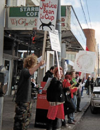
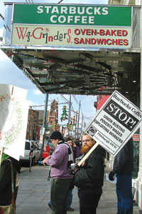
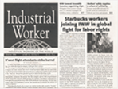

Submitted on Thu, 12/07/2006 - 1:27pm
PITTSBURGH, PA—A vocal group of workers and supporters of the Starbucks Union of the Industrial Workers of the World (IWW) again protested in Pittsburgh against Starbucks Coffee Co.’s anti-union activity.
This time the Union raised its picket line on December 2 in Bloomfield, a working class neighborhood known for its strong union heritage and as a close-knit community of local independent retailers. The IWW is demanding an end to the mistreatment and firings of workers who engage in union organizing at the world’s largest and most profitable retail coffee chain.
Despite planting numerous stores in several Pittsburgh neighborhoods, Starbucks is a corporate outsider based in Seattle, Washington and joins the ranks of too many low-wage employers throughout the city.
For nearly two hours on a sunny but frigid Saturday afternoon, workers carried picket signs, banners, and the ever-present red IWW flag as they chanted in front of the Bloomfield Starbucks on Liberty Ave. However, before the picket started the IWW serenaded fellow workers and customers inside the store with a resounding rendition of “Solidarity Forever,” the classic American labor anthem written by the Wobblies in 1915. But on this day the union sang a new verse written for coffee industry workers:
Submitted on Thu, 12/07/2006 - 1:26pm
Article and Photograph by Charlie Dietch - Pittsburgh City Paper, December 7, 2006.
(Pictured at right) - Industrial Workers of the World member Jonah McCallister pickets the Starbucks in Bloomfield with IWW organizer Kevin Farkas, as the IWW national organizing campaign continues here.
It wasn't the type of response that union organizers typically get from management.
On Dec. 2, a dozen or so protesters from the Industrial Workers of the World assembled in front of the Starbucks on Liberty Avenue in Bloomfield -- part of a national IWW campaign to organize the coffee giant and protest the firing of five New York baristas, allegedly for union activity. Very soon after, out came two members of Starbucks management to offer free samples of pastry and hot coffee -- to picketers and passersby alike.
Submitted on Wed, 12/06/2006 - 1:14am
Headlines:
- Starbucks CEO hides from Wobbly protesters
- Media workers face bosses’ insatiable greed
- Workers without bosses under attack - By marie rigona, Grupo Alavío, Argentina
Featured Articles:
- Immokalee workers tell Chipotle to walk its talk.
- Adjunct professors work long hours for short pay.
Download a free PDF Copy of this issue.
Find out how you can support the Industrial Worker.
Submitted on Wed, 11/29/2006 - 2:22pm
Saturday, November 18, 2006
Washington, DC
Tonight, members of the DC branch of the Industrial Workers of the World held an informational picket outside the Landmark E Street Cinema in DC. The picketers were showing their solidarity with Bay Area IWW members at the Landmark Shattuck Cinema in Berkley, CA, who are currently in contract negotiations with Landmark mangement.
The Shattuck workers voted overwhelmingly to join the IWW back in June of this year, and since then have been met with an unwillingness on the part of management to sit down and negotiate in good faith. To learn more about the Shattuck workers' fight, and how to get involved, visit shattuckunion.iww.org
Submitted on Mon, 11/27/2006 - 7:24pm
 The IWW had an amazing victory last week. A contract was negotiated between the Boss at ez-supply and the workers. After a year long fight workers made the big wins in improving their working conditions. This is amazing!
The IWW had an amazing victory last week. A contract was negotiated between the Boss at ez-supply and the workers. After a year long fight workers made the big wins in improving their working conditions. This is amazing!
This next part is from Benjamin who has worked on the campaign and was at the negotiations.
the boss acknowledged that he was hurt very bad by our cutting into his business! our flyering in park slope has paid off for the EZ supply workers, who scored well in their bargaining session.
- the boss has agreed to recognize the union, & workers spoke to their boss from the 1st time w/out fear.
- wage increases $1.70 - $2.45/hr. over 24 months
- a grievance procedure
- premium pay for certain types of routine work
- 3 paid sick days
- an additional holiday in 2nd yr. of contract
- across the board second week vacation
- the company will sponsor the workers' green cards, & no worker will be fired for their immigration status
- their files will be purged of all union activities
- and they've received some of the back pay, & have retained an attorney to pursue the rest in federal court.
All of this is still yet to be voted on, & isn't of course as good as was wanted, so its certainly not over yet. we began working on this campaign exactly 1 year ago!